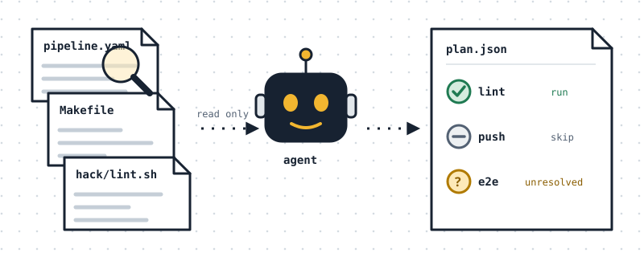
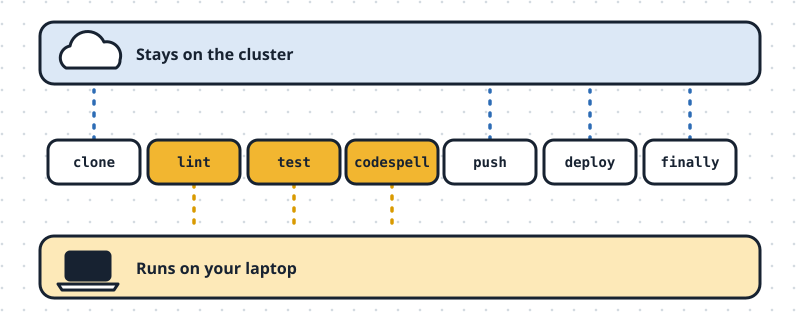
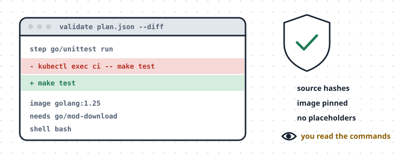
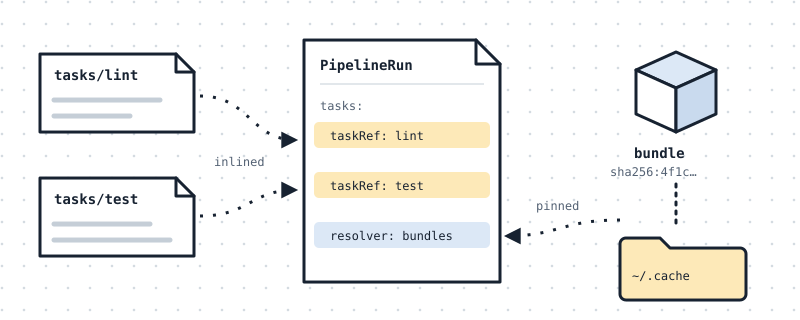
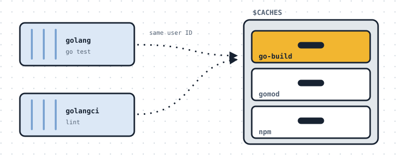
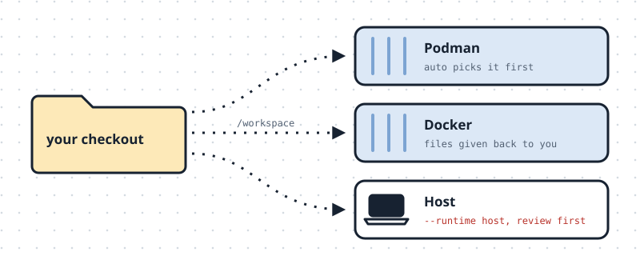
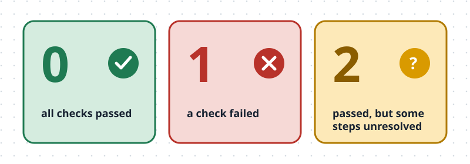

Using tkn-innerloop
tkn-innerloop takes a Tekton PipelineRun or Pipeline from your repository,
asks a coding agent to adapt its steps for your machine, and runs them in Podman or Docker.
Kubernetes stays in CI.

How a run works
flowchart LR
Source@{ img: "/icons/repository.svg", label: "Pipeline and helpers", w: 48, h: 48, constraint: "on" }
Agent@{ img: "/icons/agent.svg", label: "Read and propose", w: 48, h: 48, constraint: "on" }
Plan@{ img: "/icons/document.svg", label: "Review the plan", w: 48, h: 48, constraint: "on" }
Check@{ img: "/icons/check.svg", label: "Validate inputs", w: 48, h: 48, constraint: "on" }
Run@{ img: "/icons/container.svg", label: "Run local scope", w: 48, h: 48, constraint: "on" }
Edit@{ img: "/icons/code.svg", label: "Edit source", w: 48, h: 48, constraint: "on" }
Source --> Agent --> Plan --> Check --> Run --> Edit
Edit --> Check
%% play: Convert once
%% Source -> Agent | The agent reads YAML, Makefiles and referenced helpers with read-only tools
%% Agent -> Plan : edits | Review exact script changes, prerequisites and excluded checks
%% Plan -> Check | The CLI verifies source hashes, image provenance and script structure
%% Check -> Run | Execute the selected checks in their declared images
%% play: Reuse after editing
%% skip Source Agent Plan
%% Run -> Edit
%% Edit -> Check | Code edits reuse the saved plan; changed pipeline inputs require regeneration
%% Check -> Run : no model | Run the same local scope againThe agent reads the pipeline YAML and the helpers it calls (Makefiles, scripts, configuration). It gives every step a decision with a reason: run it locally, skip it, or leave it unresolved. For steps that run, it proposes exact edits to their scripts. The CLI checks the plan and runs it. Nothing runs on a guess: a step starts unresolved until the agent decides, and no allowlist of command names decides for it.
The plan is cached in ${XDG_CACHE_HOME:-~/.cache}/tkn-innerloop/<repo>-<hash>/,
outside your working tree, so your repository does not change and linters that scan it never see the
plan. Later runs reuse the plan with no model call. It is regenerated when the pipeline or one of the
files it declared as inputs changes, or when you pass --refresh.
The agent and the model

Conversion uses the pi coding agent with its
read, grep, find and ls tools. Those tools only
read, but they are not a filesystem sandbox. pi's startup update checks are turned off.
The default model is Haiku. Pick another with --model or
TKN_INNERLOOP_AI_MODEL. Thinking stays off unless the model name ends in a pi level, such
as github-copilot/claude-sonnet-5.5:minimal. Some models refuse to turn thinking off.
Model choice matters. Over 10 conversions of one step (go/unittest), Haiku produced a
valid plan on the first try every time, in 6.5 seconds on average. DeepSeek V4.1 Flash through enmaas
needed a retry 5 times and failed 3 times, usually because of unescaped quotes in shell edits. A
malformed answer is sent back twice with the exact error. A step the agent leaves unresolved is not
retried.
Assessing a repository
tkn-innerloop inspect [PATH] [--model MODEL]
With a directory or no argument, inspect looks recursively under .tekton/ for PipelineRuns in
.yaml and .yml files. Reports use the repository-relative path
and one-based YAML document number, with the run name when available. A bad document
does not stop assessment of other runs. A file argument lists source steps without calling Pi. The directory defaults to the current Git
working tree. --model follows the same defaults as generation.
Pi gets the workflow, full step inventory and known blockers, with all tools disabled. Local definitions can be read by the CLI, but remote references are not fetched. The command skips symbolic links and credential files, redacts recognized credential values, and does not fetch secrets. Review manifests for embedded secrets before sending them to a model. No scripts, containers or hooks run, and no plan is saved or cached.
fully runnable: the full workflow appears feasible locally, accounting for provided steps.partly runnable: a subset can give specific local feedback or write a named artifact.cluster-only: there is no useful local scope, and the only blockers are known publish or deploy actions.unresolved: useful local scope could not be established, for example because a reference is missing or the local runner does not support an input. The report shows why.
These verdicts are advisory, not proof of execution or safety. Each assessed step cites
source evidence or a known blocker. A malformed reply or provider failure is reported
separately from verdicts. Exit 0 means the assessments completed, not that checks
passed. Exit 1 includes no PipelineRuns or a PipelineRun that could not be assessed.
Running eligible repository work
tkn-innerloop run [--repo PATH] [--model MODEL]
Without a file argument, run performs the same inspection and runs only the eligible
native shell scripts or explicit commands, in dependency order and with the source images.
It does not need a prior inspection. The CLI checks the exact steps and source hashes and builds
a fresh in-memory plan per YAML document. The model cannot edit scripts or supply execution inputs.
Use a trusted checkout: its source commands run with access to the working tree.
The checkout maps to /workspace in containers. A literal workingDir: /workspace
requires a task workspace mounted at exactly that path and bound to a declared PipelineRun
emptyDir workspace without a subpath. The equivalent $(workspaces.NAME.path)
works for the same binding with the default mount or /workspace. For simple literal
shell redirections in a known checkout working directory, inspection can report whether a regular
input file is present or an output parent exists and is writable on the host. It does not follow
symbolic links or read file contents. Missing paths stay unresolved. These observations are not
proof that a container user has the same permissions. Host mode maps the
working directory to the checkout root and does not forward the caller's environment except
PATH. It is not a filesystem sandbox.
Bare runs leave remote references, redacted inputs, cluster actions and steps requiring unsupported
adaptation out of execution. Exit 1 means an assessment or run failed;
2 means work remained unresolved or nothing ran; 0 means eligible work
completed and any other steps were intentionally excluded. Independent PipelineRuns still get a
chance to run. Use an explicit pipeline file or saved plan for --steps or --env.
--refresh applies to explicit pipeline conversion, not bare runs.
Choosing steps

With an explicit pipeline file but no --steps, run chooses the steps itself. These stay on the cluster:
- steps that use an external reference such as
git-clone - steps whose work the local checkout already covers
finallytasks- steps marked
(skip-local) - steps that push, deploy or call an API
tekton-caches steps are replaced by a local cache directory (see Caches). The agent decides the rest.
Add patterns for your own publishing tools in .tekton-innerloop.yaml at the repository
root. Each entry is a regular expression added to the built-in list:
cluster_only: - '\bwrangler\s+deploy'
--steps replaces the automatic choice. Use the step IDs that inspect prints
when a step name is ambiguous. A single PipelineRun uses task/step IDs. A file with several
YAML documents uses pipelinerun/task/step. Empty YAML documents are ignored.
Reviewing before running

run executes the scripts the agent edited without stopping. To read them first:
tkn-innerloop inspect .tekton/linter.yaml tkn-innerloop generate .tekton/linter.yaml \ --steps codespell,check-test-conventions -o /tmp/linters.plan.json tkn-innerloop validate /tmp/linters.plan.json --diff tkn-innerloop run /tmp/linters.plan.json
validate --diff prints every decision with the original and adapted scripts. Each script
edit must match its source text exactly once. A runnable step keeps its source image and declares its
shell, environment, working directory and the steps it depends on. The runner refuses a plan with
stale input hashes, unknown step selections, missing setup steps, Tekton or Pipelines-as-Code
placeholders left unbound, or unresolved steps in the selected scope.
These checks look at structure. They cannot prove that the adapted script does the same thing as the original or that its commands are safe, so read the commands. The runner does not emulate Tekton's scheduler, sidecars or result passing. The agent has to account for those or leave the step unresolved. The inputs the agent lists in the plan decide which file changes make it stale.
Run it before each commit

The repository ships a pre-commit hook. Add it to
.pre-commit-config.yaml in the repository you want to check, and pass the pipeline file
and any other run options as args:
repos:
- repo: https://github.com/openshift-pipelines/tkn-innerloop
rev: main
hooks:
- id: tkn-innerloop
args: [.tekton/linter.yaml, --steps, "codespell,yamllint"]
Then pin rev to the current commit and install the git hook:
pre-commit autoupdate --bleeding-edge pre-commit install
pre-commit installs tkn-innerloop in its own environment. You still need pi, and Podman or Docker, on
your machine. Before each commit, pre-commit sets aside the changes you have not staged, so the checks
see what you are about to commit. Any check that fails stops the commit, and so does exit code
2, when some steps stayed unresolved. Narrow the hook with --steps to the
checks that run.
Run tkn-innerloop run with the same arguments once by hand before installing the hook, so
the agent writes the plan outside of a commit. After that each commit reuses the plan with no model
call, until the pipeline or its helpers change. To commit once without the checks, use
SKIP=tkn-innerloop git commit.
If tkn-innerloop is already installed with uv, a local hook avoids the second copy:
repos:
- repo: local
hooks:
- id: tkn-innerloop
name: tkn-innerloop
entry: tkn-innerloop run .tekton/linter.yaml
language: system
pass_filenames: false
Pipelines and references

A file can hold PipelineRuns, or Pipelines when it has no PipelineRun, with the Tasks and StepActions they use. ConfigMaps, Secrets and other resources in the same file are ignored.
A pipelineRef, taskRef or step ref by name is looked up in the
repository's tracked and untracked YAML files and inlined. Git-ignored files are skipped. A PipelineRun
that points at tekton/pipeline.yaml, with Tasks under tekton/tasks/, works as
is. Those files become plan inputs, so editing a Task makes the plan stale.
A missing pipelineRef, or a remote one that is not a bundle, is an error, since there is
no step list to work from. A Task or StepAction that is missing, defined twice, a ClusterTask, or
fetched by another resolver (hub, git) stays an unresolved reference, and inspect says
why.
Tekton bundles
tkn-innerloop fetches bundles (resolver: bundles) for
pipelineRef, taskRef and step ref with
skopeo, using your registry login. Each object is
pinned to its image digest, and a tag is looked up once per run. Objects are cached in
${XDG_CACHE_HOME:-~/.cache}/tkn-innerloop/bundles/, so later runs work offline. They are
plan inputs like local files. Set TKN_INNERLOOP_BUNDLE_DIR to a mirror with the same
layout to check it before the cache. When skopeo is missing or the fetch fails, a Task stays a
reference with the reason, and a bundle pipelineRef is an error.
Konflux
In Konflux pipelines the clone task and the build-trusted-artifacts steps only rebuild
the source checkout. They are marked as covered by your local checkout and never run. The directory
they restore into, /var/workdir/source, becomes $WORKSPACE in the other
steps.
Parameters, when and matrix
The agent gets parameter values with the task defaults applied and uses them in its script edits. It
evaluates when guards it can decide from parameters. For a matrix task, it
loops over the combinations or leaves the task unresolved; inspect marks those tasks.
Pipelines-as-Code
A file with pipelinesascode.tekton.dev/ annotations turns on Pipelines-as-Code handling.
{{ revision }}, {{ source_branch }}, {{ target_branch }} and
{{ event_type }} become $HEAD_SHA, $HEAD_REF,
$BASE_REF and pull_request. The agent binds any other placeholder or leaves
the step unresolved. Outside Pipelines-as-Code files, {{ … }} is left alone, since Go
templates are ordinary script text.
When tkn-pac is installed, the file goes through tkn pac resolve first,
which also fetches tasks named in pipelinesascode.tekton.dev/task annotations. The output
is cached next to the plan and reused until an input changes or you pass --refresh. If
tkn pac resolve fails, local resolution takes over with a warning.
Caches

The cache-fetch and cache-upload StepActions from
tekton-caches are skipped locally.
The runner spots them from dedicated uses of /ko-app/cache or upstream cache scripts in
known cache images. For an unresolved reference it checks the action name, URL or path.
Steps in the same PipelineRun that use the same image and workspace directory can share a persistent
path such as $CACHES/go-build-cache-<hash>. Go caches set through
GOCACHE, GOMODCACHE or GOLANGCILINT_CACHE, and npm download
caches set through npm_config_cache or NPM_CONFIG_CACHE, are shared across
images that run as the same user ID.
Each cache directory must serve one tool. These stay at their original path:
- directories used by several tools or by containers with different user IDs
- overlapping or relative paths
node_modules- caches that contain the step's working directory
- cache paths in scripts that use here-documents or command substitution
tkn-innerloop cache clean removes the local caches. When Docker created files your user
cannot delete, cleanup uses an Alpine container and may pull its image.
Runtimes and environment

--runtime auto, the default, uses Podman when installed and Docker otherwise. Both mount
the worktree at /workspace, replace the image entrypoint with the declared shell, and pass
the script on stdin. Docker's daemon runs as root, so after each step the runner gives the files it
created in your checkout back to you. Podman already writes them as you.
--runtime host runs the same scripts with the tools, setup commands and environment of
your machine. Use it only after reviewing those commands.
The runner sets these variables, each only when a selected step uses it:
| Variable | Value |
|---|---|
BASE_SHA | git merge-base HEAD <base>. The base is
origin's default branch, else main, else master. Change it with
--base. |
BASE_REF | that base branch, without the remote |
HEAD_SHA, HEAD_REF | the current commit and branch |
RESULTS | an empty directory outside the checkout (/results
in containers), shared by the steps of one run and removed afterwards. Tasks write their results
there and the tasks that consume them read them. |
CACHES | the persistent cache directory (/caches in
containers), under
${XDG_CACHE_HOME:-~/.cache}/tkn-innerloop/<repo>-<hash>/caches/ |
Host runs, each container runtime and each image ID get separate cache storage. Go and npm caches shared across images are keyed by tool, runtime and user ID.
Secrets are forwarded only when you pass --env NAME. A step that lists the variable in
required_env blocks the run without it. A variable in optional_env, such as a
token that only raises a rate limit, is forwarded when you pass it and never blocks.
tkn-innerloop fetches no credentials on its own.
Image tags and network downloads can change tool versions between runs. The runner tells you when an image tag resolves to a different image than last time.
Failures and exit codes

Steps keep running after a failure unless a later step depends on the failed one. A failure under
onError: continue does not fail the run. On a step it is ignored. On a pipeline task, the
rest of that task's steps are skipped, as in Tekton, and the following tasks still run. A container
that fails to start always fails the run.
| Exit code | Meaning |
|---|---|
0 | every selected check passed |
1 | a check failed |
2 | everything that ran passed, but some steps stayed unresolved |
A successful run reports what ran and how many steps were skipped or left unresolved. Cluster CI still covers the rest of the pipeline.
Output
The terminal shows live progress, elapsed time and colored step results. Redirected output has no
ANSI styling, and NO_COLOR turns color off.
Agent skill
tkn-innerloop skills show prints the skill for coding agents.
tkn-innerloop skills install copies it into .agents/skills/ in the current
repository, or into --target.